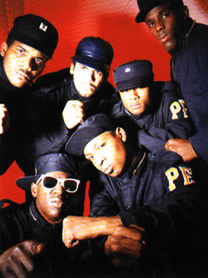
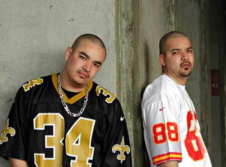
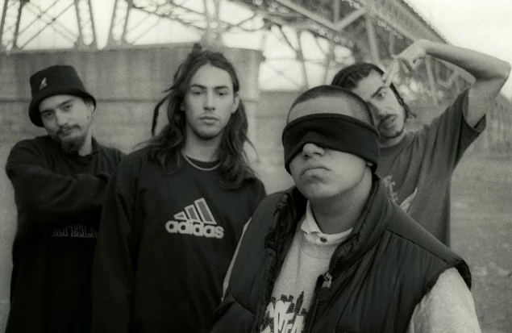
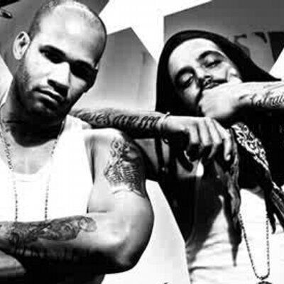

.png)
ARTISTAS DEL HIPHOP-RAP
¿Quieres conocer más artistas dentro de la industria del hip hop–rap? ¡Aquí puedes hacerlo! Ven y descubre información para que empieces a expandir tu conocimiento sobre el rap. En esta página encontrarás a muchos artistas importantes, además de algunas sugerencias. Si deseas seguir explorando sonidos emergentes o más underground, puedes revisar el artículo al final de la página, donde hallarás una lista completa de artistas actuales, desde los más comerciales hasta los más underground.
Artistas de EE.UU
Kendrick Lamar
Kendrick Lamar es un rapero y compositor estadounidense aclamado por su lírica introspectiva y crítica social. Es conocido por fusionar rap con elementos de jazz, funk y soul, y por álbumes icónicos como To Pimp a Butterfly y DAMN. Albunes Destacados
|
Tupac Shakur (2Pac)
2Pac fue un influyente rapero y poeta estadounidense conocido por sus letras crudas sobre la vida en los barrios marginados y la injusticia social. Su música y activismo lo convirtieron en un ícono del hip hop. Albunes Destacados
|
The Notorious B.I.G.
The Notorious B.I.G., o Biggie, fue un rapero estadounidense icónico de Brooklyn, famoso por su estilo fluido y líricas realistas.Su álbum Ready to Die, lo consolido como uno de los grandes del hip hop. Albunes Destacados
|
Nas
Nas es un rapero estadounidense de Queens, reconocido por su lirismo poético y su impacto en la cultura del hip hop.Su álbum debut Illmatic es considerado uno de los mejores Albunes de la historia Albunes Destacados
|
Dr. Dre
Dr. Dre es un productor y rapero estadounidense pionero del gangsta rap y cofundador de N.W.A.Es famoso por lanzar carreras de artistas como Snoop Dogg, Eminem y 50 Cent, y por su innovador estilo de producción. Albunes Destacados
|
Snoop Dogg
Snoop Dogg es un rapero y productor estadounidense conocido por su estilo relajado y su influencia en el gangsta rap de la costa oeste.Su álbum debut Doggystyle lo catapultó a la fama y lo convirtió en un ícono cultural mundial. Albunes Destacados
|
Eminem
Eminem es uno de los raperos más exitosos de todos los tiempos. Conocido por su estilo agresivo y su habilidad lírica con letras personales e intesas, rompió barreras como rapero blanco y vendió millones de discos en todo el mundo. Álbumes Destacados
|
Kanye West
Kanye West es un rapero, productor y diseñador de Chicago. Revolucionó el sonido del hip hop con su innovación en beats, letras y estética, siendo uno de los artistas más influyentes de la música moderna. Álbumes Destacados
|
Public EnemyPublic Enemy es un grupo pionero del rap político y social formado en Nueva York en los 80. Sus letras confrontaron el racismo y la injusticia en los años 80 y 90, siendo referentes del rap consciente. Volviendose una de las voces más influyentes de la industria. Álbumes Destacados
|
DJ Kool Herc
DJ Kool Herc es considerado el padre del hip hop. En los años 70 en el Bronx, creó el breakbeat usando dos tornamesas, sentando las bases del rap, el breakdance y la cultura hip hop.Su innovación sentó las bases del rap y la cultura hip-hop. Legado Destacado
|
Artistas de Latinoamerica y Europa
Control Machete
Grupo de rap mexicano formado en Monterrey en los años 90. Con su disco Mucho Barato (1997) llevaron el hip-hop en español a la escena internacional. Su estilo crudo y potente marcó un antes y un después en la música urbana latinoamericana. Álbumes Destacados
|
Vico C
Rapero puertorriqueño considerado el “Padre del Rap en Español” y conocido como “El Filósofo del Rap”. Desde los años 80 fusionó hip-hop con ritmos caribeños y letras conscientes, abriendo camino en Latinoamérica. Su influencia es clave en el desarrollo del reguetón y el rap latino. es uno de los pioneros del hip hop en español. Álbumes Destacados
|
Cypress Hill
Grupo de hip-hop latino-estadounidense formado en Los Ángeles en los 90. Se hicieron famosos por su estilo oscuro, rimas bilingües y su defensa abierta del cannabis. Con discos como Black Sunday dejaron una huella imborrable en el rap mundial. Álbumes Destacados
|
AkwidDúo de hip-hop originario de México y criado en Los Ángeles, integrado por los hermanos Francisco y Sergio Gómez. Son conocidos por mezclar rap con música regional mexicana, creando un estilo único. Su éxito No Hay Manera los consolidó como referentes del rap latino. Álbumes Destacados
|
Lil Supa
Lil Supa es un rapero y productor venezolano, reconocido por su estilo introspectivo y versátil. Con letras cargadas de identidad y cultura, se ha convertido en una de las voces más influyentes del hip hop latinoamericano contemporáneo. Álbumes Destacados |
Kase.O
Rapero español y miembro de Violadores del Verso, considerado uno de los mejores letristas en habla hispana. Su estilo combina poesía, reflexión y crítica social con flows únicos. Su álbum El Círculo (2016) es un referente del rap en español. Aunque español, su influencia en la escena latina es enorme gracias a sus letras poéticas y filosóficas. Álbumes Destacados
|
NachRapero y poeta español, conocido por sus letras profundas, cargadas de reflexión y conciencia social. Con más de dos décadas de trayectoria, se ha consolidado como una de las voces más influyentes del rap en español. Álbumes como Un Día en Suburbia lo hicieron referente del género, sus letras cargadas de reflexión lo convirtieron en referente en España y América Latina. Álbumes Destacados
|
Canserbero
Rapero venezolano considerado una de las voces más poderosas e influyentes del hip-hop en español. Sus letras abordan la vida, la muerte, el amor y la injusticia social con un estilo crudo y reflexivo. Álbumes como Vida y Muerte lo convirtieron en un referente eterno del hip hop en español. Álbumes Destacados
|
Tiro de GraciaGrupo chileno de rap formado en los 90, pionero en llevar el hip-hop a la escena latinoamericana. Su disco Ser humano!! (1997) marcó un hito con un sonido fresco y letras urbanas. Son reconocidos como una de las bandas más influyentes del rap en español. Su estilo callejero y auténtico marcó a toda una generación en América Latina. Álbumes Destacados
|
Los AldeanosDúo de rap cubano formado por Al2 El Aldeano y El B, conocido por sus letras directas y contestatarias. Su música denuncia la censura, la represión y las injusticias sociales en Cuba. Son considerados un símbolo de resistencia y del rap consciente en Latinoamérica. Álbumes Destacados
|
Menciones importantes de artistas y un album de EE.UU, Latinoamerica, Europa
Artista de Hip Hop en EE. UU.
|
Artistas de Hip Hop en Latinoamerica
|
Artista de Hip Hop en Europa
|